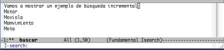
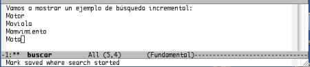
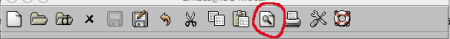
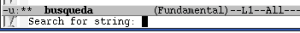
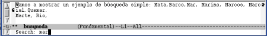

6. Búsquedas
Pág.Anterior | Índice | Pág.Siguente
Si utilizamos Emacs para la edición de contenidos extensos, la funcionalidad de buscar y buscar-y-reemplazar> pueden facilitarnos la tarea de una forma considerable.
Centrándonos en la funcionalidad de búsqueda, podemos considerar varias tipos :
- Búsqueda simple: Sencillamente, se proporciona una cadena y Emacs busca la primera ocurrencia.
- Búsqueda incremental: En Emacs, el comando de búsquedas de cadenas es incremental; la búsqueda ocurre a medida que se va tecleando la cadena.
- Búsqueda por palabras: En este tipo de búsquedas Emacs localiza exactamente la cadena introducida. Así, si la cadena
introducida es la, nos buscara el artículo la, pero no palabras que contengan la secuencia la, como, por ejemplo,
cola, lazo o alambique.
En realidad, este tipo de búsqueda es una búsqueda no incremental que ignora saltos de línea, espacios en blanco y puntuaciones.
Más adelante se tratará de la utilización de expresiones regulares en las búsquedas.
6.1. Búsquedas Incrementales
Pág.Anterior | Índice | Inicio Página | Pág.Siguente
En Emacs, los comandos de búsqueda son, por defecto, incrementales. Como se ha dicho anteriormente, la búsqueda incremental comienza desde el momento en que se introduce el primer caracter de la cadena de búsqueda.
A medida que se van tecleando caracteres, Emacs va destacando las coincidencias encontradas en el texto. El modo de destacar las coincidencias encontradas puede variar de una plataforma a otra.
El comando básico de la búsqueda incremental es:
- Comando: C-s
- Opción de menú: Edit-->Search-->Incremental Search-->Forward String
Algunas versiones de Emacs no disponen de esta opción de menú. - Comando "largo": M-x isearch-backward <Enter>
Veamos, gráficamente, el comando C-s en acción:
Vamos a iniciar la búsqueda de la cadena mota .
Tecleamos el comando C-s : Vemos como en la linea de modo aparece la palabra
Isearch tras el modo mayor activo.
En el mini-buffer aparece el mensaje I-Search:
|  |
Tecleamos el primer caracter de la cadema de búsqueda: m .
Podemos observar como se van destacando las coincidencias, en azul en el texto y en violeta en la palabra en la que se encuentra el cursor.
A medida que vamos tecleando caracteres van marcándose las coincidencias encontradas.
Mediante las teclas <Supr> o <BackDel> podemos ir rectificando los errores que hayamos podido cometer al introducir la cadena en el mini-buffer.
Cuando hemos introducido la cadena que que estamos buscando, Emacs situa el cursor en la primera de las coincidencia. Para localizar otras coincidencias posterioresen el texto, ir tecleando C-s .Cada vez que tecleemos el comando el cursor se irá situando en la siguiente coincidencia. Para retroceder en la secuencia de coincidencias, ir pulsando <DelBack> .
Finalizamos la búsqueda con <Enter> .
|  |
La búsqueda se cancela con <Enter> o con C-g.
Visto el modo de funcionamiento de la búsqueda incremental con el comando básico, es el momento de presentar otras opciones:
- Comando: C-r
- Opción de menú: Edit-->Search-->Incremental Search-->Backward String
Algunas versiones de Emacs no disponen de esta opción de menú. - Comando "largo": M-x isearch-backward <Enter>
- El funcionamiento es el mismo que con C-s , pero en este caso la búsqueda se realiza hacia atrás.
- Comando: C-s C-s
- Comando "largo": M-x isearch-repeat-forward <Enter>
- Repite la anterior búsqueda, iniciada con C-s .
- Comando: C-r C-r
- Comando "largo": M-x isearch-repeat-backward <Enter>
- Repite la anterior búsqueda, iniciada con C-r .
- Comando: C-s C-w
- Comando "largo": M-x isearch-yank-word <Enter>
- Inicia la busqueda incremental tomando como cadena la palabra sobre la que se encuentra situado el cursor.
- Comando: C-s C-y
- Comando "largo": M-x isearch-yank-line <Enter>
- Inicia la busqueda incremental tomando como cadena el texto comprendido entre la palabra sobre la que se encuentra situado el cursor y el final de la línea.
- Comando: C-s M-y
- Comando "largo": M-x isearch-yank-kill <Enter>
- Inicia la busqueda incremental tomando como cadena el texto situado en el kill ring
6.2. Búsquedas Simples (No Incrementales)
Pág.Anterior | Índice | Inicio Página | Pág.Siguente
Para la realización de búsquedas no incrementales, utilizaremos los mismos comandos , C-s y C-r , pero en la siguiente secuencia:
Para la búsqueda hacia adelante:
- Comando: C-s <Enter> cadena_de_búsqueda <Enter>
- Opción de menú: Edit-->Search--> Search Forward...
En la barra de herramientas tenemos un icono para las búsquedas simples:
|  |
Para la búsqueda hacia atrás:
- C-r <Enter> cadena_de_búsqueda <Enter>
- Opción de menú: Edit-->Search--> Search Backward...
Veamos gráficamente esta secuencia:
Tecleamos el comando C-s. En la pantalla aparecen los mismos mensajes que en una búsqueda incremental :
Pulsamos <Enter> :
Si la búsqueda se hubiera iniciado mediante la opción de menú o el icono de la barra de herramientas, el mensaje que apereceria en el mini-buffer seria directamente el que nos pide una cadena de búsqueda :
Introducimos la cadena de búsqueda:
|  |
Al pulsar <Enter> el cursor se sitúa justo después de la primera coincidencia.
En el caso de una búsqueda hacia atrás se procederia de la misma forma, con la salvedad de que no dispone de icono en la barra de herramientas.
Como en el caso de la búsqueda incremental, con C-s y C-r , se repite la búsqueda.
Tenemos dos opciones de menú para las repeticiones de búsqueda:
- Edit -->Search-->Repeat Search...
- Para las búsquedas hacia a delante
- Edit -->Search-->Repeat Backwards...
- Para las búsquedas hacia a atrás
6.3. Búsquedas por palabras
Pág.Anterior | Índice | Inicio Página | Pág.Siguente
Como se ha comentado anteriormente, este tipo de búsqueda nos localiza exactamente la cadena que introduzcamos.
Se basa también en los comandos C-s y C-r , combinados con el comando C-w en la siguiente secuencia:
Para la búsqueda hacia adelante:
- Comando: C-s <Enter> C-w cadena_de_búsqueda <Enter>
Para la búsqueda hacia atrás:
- Comando: C-r <Enter> C-w cadena_de_búsqueda <Enter>
Tras teclear C-w , en el mini-buffer aperece el mensaje Word Search: , solicitándonos que tecleemos la cadena de búsqueda.
El proceso es similar al de búsqueda no incremental
Estos comandos de búsquedas por palabras son extremadamente útiles cuando deseamos buscar palabras, frases... etc, en definitiva, cadenas, divididas por saltos de linea. Como también ya se comentó mas arriba, en la busqueda por palabras se ignoran signos de puntuación, saltos de linea y espacios en blanco.